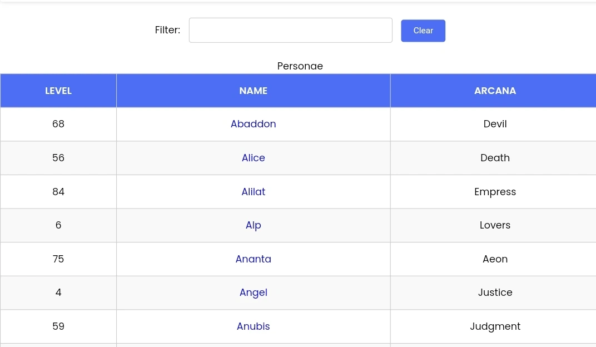
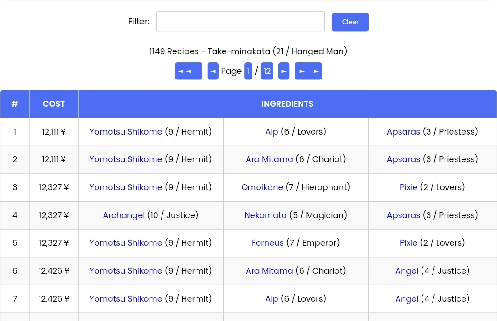
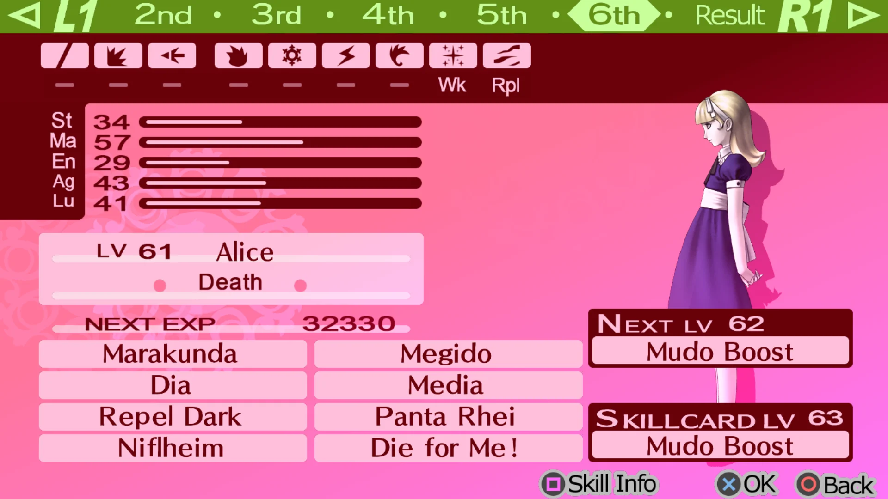

Introduction

Welcome to the Persona 3 Portable Fusion Calculator, your indispensable companion for unlocking the true potential of fusion in the world of Persona 3 Portable. Whether you're a seasoned player or new to the game, this calculator is designed to guide you through the intricate art of persona fusion.
In Persona 3 Portable, fusion plays a vital role in expanding your repertoire of personas. By combining multiple personas, you can create new and formidable allies with enhanced abilities and attributes. The fusion process allows you to tap into the strengths of different personas, forging powerful personas that can aid you in your battles against the enigmatic Shadows.
Our Fusion Calculator has been meticulously crafted to assist you in navigating the complexities of persona fusion. With an extensive database of personas and their fusion recipes, you can easily search for specific personas and explore the optimal combinations required to create your desired personas.
Whether you're seeking personas with devastating offensive skills, specialized support abilities, or a well-balanced blend of attributes, our Fusion Calculator will provide you with the knowledge and guidance you need. Unleash the power of fusion and forge your path to triumph with confidence.
As you delve deeper into the world of persona fusion, consider the levels, arcana, and fusion recipes of the personas. Experiment with different combinations, explore the boundless possibilities, and unearth hidden gems that will aid you on your journey.
With the Persona 3 Portable Fusion Calculator at your fingertips, you have the means to create formidable personas and overcome any challenge that crosses your path. Embark on an extraordinary adventure, where the fusion of personas holds the key to your success. Let the fusion begin!
How to Use
Unlock the secrets of persona fusion with this comprehensive step-by-step guide on how to effectively use the Persona 3 Portable Fusion Calculator:
Step 1: Select Persona
To begin, access the Persona 3 Portable Fusion Calculator. Choose the persona you wish to fuse or explore fusion recipes for. You can browse through the persona list or utilize the search function to find a specific persona. This allows you to focus on the persona you want to enhance or create.
For example, let's say you have the persona "Pixie" and want to discover its fusion possibilities. Use the search function or scroll through the list to find "Pixie."
Step 2: View Fusion Recipes
Once you have selected a persona, the Fusion Calculator will display a list of fusion recipes associated with that persona. These recipes represent the combinations of personas required to create the desired persona. Take your time to carefully review the fusion recipes and explore the available fusion options.
For "Pixie," the Fusion Calculator might reveal fusion recipes such as fusing "Pixie" with "Jack Frost" to create the persona "High Pixie." Another recipe might involve fusing "Pixie" with a specific combination of personas to create a powerful persona with unique skills and abilities.
Step 3: Obtain Required Personas

Before you can perform a fusion, ensure that you have obtained all the necessary personas involved in the fusion recipe. If any of the required personas are missing from your collection, refer back to the Fusion Calculator to identify the specific personas you need to acquire. This step is crucial for a successful fusion.
Following our example, if a fusion recipe requires "Jack Frost," make sure you have already acquired it. If not, consult the Fusion Calculator for "Jack Frost's" fusion recipe and gather the required personas to fuse and create "Jack Frost" before proceeding with the desired fusion involving "Pixie."
Step 4: Perform Fusion
With the required personas in your possession, it's time to perform the fusion. Follow the fusion recipe details provided by the Fusion Calculator. These details will specify which personas need to be fused together and the resulting persona that will be created. Pay close attention to the personas' levels, arcana, and any additional instructions mentioned in the fusion recipe.
Returning to our example, let's say you have "Pixie" and "Jack Frost" in your inventory. Follow the fusion recipe provided by the Fusion Calculator, which might instruct you to fuse "Pixie" and "Jack Frost" together at a specific fusion location. By following the instructions and confirming the fusion process, you'll witness the birth of the new persona, such as "High Pixie."
Step 5: Evaluate Resulting Persona
After the fusion is complete, take a moment to evaluate the resulting persona. Consider its new skills, abilities, and attributes. Assess whether it aligns with your desired playstyle or complements your current party's strengths and weaknesses. This evaluation will help you determine if the fusion was successful and if the resulting persona fits into your overall strategy.
Analyze the strengths and weaknesses of "High Pixie." Does it possess powerful magic-based skills that can be advantageous in certain battles? Does it bring unique support abilities or stat boosts that can complement your team composition? Take these factors into consideration to determine if the fusion was successful and how the resulting persona can contribute to your gameplay strategy.
Keep in mind that persona fusion is an iterative process. Feel free to repeat these steps, explore different fusion recipes, and experiment with various personas. The Persona 3 Portable Fusion Calculator is an invaluable tool that will assist you in optimizing your fusion strategy and enhancing your gameplay experience.
Now that you're familiar with the steps, venture forth with confidence into the world of persona fusion. Unleash the full potential of your personas and overcome any challenges that lie in your path in Persona 3 Portable!
Interesting Details
Explore some fascinating details about the Persona 3 Portable Fusion Calculator:
1. Comprehensive Fusion Database: The Fusion Calculator boasts an extensive database of personas and fusion recipes, ensuring access to a wide range of fusion possibilities.
2. In-depth Fusion Recipe Analysis: The Fusion Calculator provides detailed fusion recipe analysis, including persona levels, arcana, and specific instructions, empowering you to make well-informed fusion decisions.
3. Personalized Fusion Strategy: With the Fusion Calculator, you can develop a personalized fusion strategy to match your desired playstyle. Create personas tailored to your preferred combat approach, whether it's offense-focused, support-oriented, or a versatile blend.
4. Optimize Your Party's Abilities: Utilize the Fusion Calculator to optimize your party's abilities and fill any skill gaps. Fuse personas with complementary skills to create a well-rounded team capable of handling various challenges.
5. Discover Hidden Persona Combinations: The Fusion Calculator helps you uncover hidden persona combinations that you may not have otherwise considered. Experiment with different fusion recipes to unveil personas with unique abilities and attributes.
6. Save Time and Effort: The Fusion Calculator streamlines the fusion process by providing all the necessary information in one convenient location. Save time by quickly identifying the personas needed and their fusion requirements.
7. Community-Driven Resource: The Fusion Calculator has been developed with contributions from the Persona 3 Portable community, ensuring its accuracy and usefulness. It reflects the collective knowledge and insights of dedicated players.
8. Enhance Your Gameplay Experience: Persona fusion is an integral part of the Persona 3 Portable experience, and the Fusion Calculator enhances your gameplay by enabling you to create powerful and unique personas to aid you in your battles against the Shadows.
These interesting details highlight the significance of the Persona 3 Portable Fusion Calculator as a valuable resource for persona fusion enthusiasts. Unleash the full potential of fusion and embark on an unforgettable journey through the Persona 3 Portable universe!